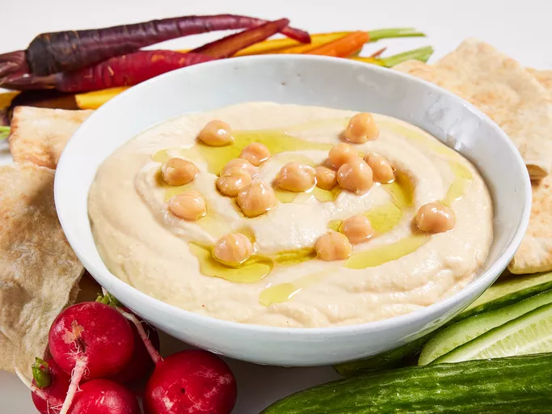

Hummus Recipe

This recipe for hummus is a family version that has been passed down for many generations. Eat with warm pita bread.
- 2 cloves garlic
- 1 (19 ounce) can garbanzo beans, half the liquid reserved
- 4 tablespoons lemon juice
- 2 tablespoons tahini
- 1 teaspoon salt
- 2 tablespoons olive oil
- black pepper to taste
Steps
- Chop garlic in a blender.
- Pour garbanzo beans into the blender, reserving about 1 tablespoon for garnish. Add reserved liquid, lemon juice, tahini, and salt to the blender. Blend until creamy and well mixed.
- Transfer mixture to a medium serving bowl. Drizzle olive oil and sprinkle pepper over the top. Garnish with reserved garbanzo beans.